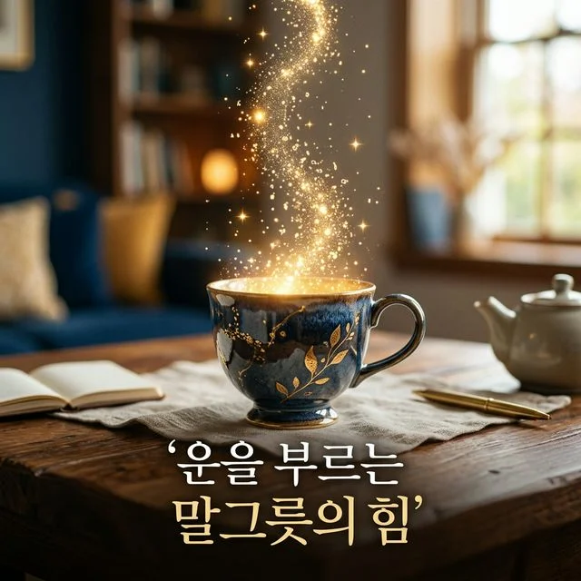
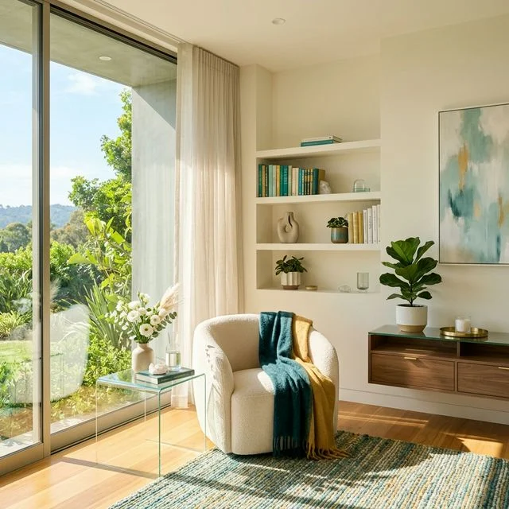

TesterLab에서 전해드리는 다양한 이야기
거친 감정의 파도가 밀려올 때 휩쓸리지 않고 유연하게 파도를 타는 '서퍼'가 되어보세요. 마음의 평정을 찾는 구체적인 튜토리얼을 제안합니다.
멈추지 않는 생각의 쳇바퀴에서 내려와 가벼운 머리와 홀가분한 마음으로 일상을 되찾는 구체적인 심리 튜토리얼을 만나보세요.
성공 뒤에 숨은 불안감, '내가 가짜는 아닐까?' 능력이 뛰어난 전문에게 더 자주 나타나는 가면 증후군의 함정을 벗어나고 성취를 온전히 누리는 방법을 공개합니다.
게으름 때문이 아니라 '감정 조절의 실패' 때문입니다. 미루는 습관을 멈추고 뇌를 속여 즉각적인 행동의 스위치를 켜는 3단계 실행력 강화 튜토리얼을 만나보세요.

지치고 피로한 몸을 위한 뇌의 전원 끄기. 수면의 질을 획기적으로 향상시키는 90분 나이트 루틴 튜토리얼을 통해 활기차게 시작하는 내일을 만들어보세요.
숏폼 영상과 SNS에 중독되어 집중력을 잃고 있나요? '가짜 도파민'의 고리를 끊고 뇌의 건강한 시스템을 회복하는 3단계 스마트폰 디톡스 튜토리얼을 만나보세요.
이유 없는 피로감과 잡념으로 지친 뇌를 위한 최고의 휴식법. 머릿속 생각의 탭을 닫고 명확한 몰입의 힘을 되찾게 돕는 브레인 덤프 튜토리얼을 만나보세요.
매일 나를 깎아먹는 '내면의 비판자'를 멈추고 회복탄력성을 높이는 자기 자비의 기술. 실패 앞에서도 나를 안아줄 수 있는 구체적인 심리 튜토리얼을 만나보세요.
상대방의 무례한 부탁을 거절하지 못해 힘들다면 당신의 경계선이 무너졌다는 신호입니다. 나를 보호하고 타인과 안전하게 소통하는 '마음의 울타리'를 세우는 튜토리얼을 만나보세요.

완벽주의와 손실 회피 편향을 극복하고, 만족자 전략과 10-10-10 법칙으로 단단하게 내리는 결정 튜토리얼을 만나보세요.
중요한 순간 찾아오는 불안함을 최고의 퍼포먼스를 내게 자극하는 에너지로 전환해보세요. 심리학 기반의 '재명명' 튜토리얼을 만나보세요.
몸과 마음의 모든 연료가 타버린 '번아웃 증후군'. 다시 일상의 활력을 찾고 나를 보호하는 구체적인 에너지 재충전 튜토리얼을 만나보세요.

진정한 자존감은 내 부족한 모습까지도 따뜻하게 수용하는 '자기 자비'에서 시작됩니다. 흔들리지 않는 내면의 뿌리를 내리는 튜토리얼을 만나보세요.

상대방에게 건넨 따뜻한 말 한마디는 나의 품격을 높이고 행운을 불러오는 자석이 됩니다. 기회와 행운을 담는 '말그릇 튜토리얼'을 만나보세요.
기록하지 않은 행운은 3초 만에 사라집니다. 내 삶의 결정적인 아이디어와 기회를 놓치지 않는 '행운 메모 튜토리얼'로 당신만의 운의 지도를 그려보세요.

진정한 행운은 비워진 자리에서 시작됩니다. 내면의 에너지를 갉아먹는 관계를 정리하고, 긍정적인 귀인들로 주변을 채워 운의 선순환을 만드는 지혜를 확인해보세요.

인생의 중요한 기회와 긍정적인 에너지는 내가 머무는 '공간'의 상태에 따라 달라집니다. 불필요한 것을 비우고 새로운 행운이 들어올 자리를 만드는 공간 정돈 튜토리얼을 확인해보세요.

아침 첫 10분이 그날의 행운을 결정합니다. 특별한 비용 없이 의지만으로 실천하는 아침 10분 루틴으로 당신의 운세를 극대화하는 비결을 확인해보세요.

우리가 사용하는 말투는 운의 흐름을 결정하는 강력한 설계도입니다. 행운을 불러오는 '골든 워딩'과 대화법으로 당신의 인생을 긍정의 풍요로 채우는 비결을 공개합니다.

내 MBTI 성향에 딱 맞는 반려식물은 무엇일까요? 초보 식집사도 실패하지 않는, 성격 지표별 마법 같은 식물 매칭 가이드를 공개합니다.

MBTI 성향을 바탕으로 나에게 꼭 맞는 인생 술과 음주 스타일을 알아보세요. 북적이는 축제형부터 고요한 혼술형까지, 당신의 잔에 담긴 진심을 찾아드립니다.

누군가에게 기억되는 향기는 당신의 MBTI와 조화를 이루어야 합니다. 당신의 매력을 극대화할 '인생 향수'를 찾는 가이드를 확인해보세요.

MBTI 성향에 따라 공감을 느끼는 포인트와 세상을 해석하는 프레임이 다릅니다. 내 MBTI 지표를 바탕으로 인생작을 찾는 가이드를 확인해보세요.

내 MBTI 성향을 바탕으로 인생 여행을 만드는 맞춤형 전략을 확인해보세요. E/I, S/N, J/P 성향별 최적의 여행 방식과 팁을 공개합니다.

내 MBTI 성향을 바탕으로 지루한 일상에 활력을 불어넣어 줄 '인생 취미'를 찾아보세요. E/I, S/N, J/P 성향에 맞는 최적의 활동을 추천해 드립니다.

자신의 성격 유형과 맞지 않는 방식으로 에너지를 쓰고 있지 않나요? MBTI 성향에 맞춘 200% 효율 공부 전략을 정리해 드립니다.

관상은 타고난 생김새만이 아닙니다. 미간, 이마, 코, 턱 등 얼굴 부위별 운을 부르는 특징과 인상을 바꾸는 실전 팁을 알려드립니다.

MBTI를 통해 서로의 '연애 언어'를 읽는 법과, 초보자도 쉽게 따라 할 수 있는 관계 개선 팁을 정리해 드립니다.

현대인에게 스트레스는 떼려야 뗄 수 없는 존재입니다. MBTI를 바탕으로 뇌와 마음이 가장 편안해지는 '맞춤형 스트레스 해소법'을 정리해 드립니다.

MBTI 결과가 자주 바뀌어 고민이신가요? 환경과 심리 상태에 따른 변화 이유와 진짜 내 성격을 찾는 정확한 검사 요령을 알려드립니다.

관상이나 MBTI처럼 나를 알아가는 과정은 언제나 흥미롭습니다. 특히 최근 테스터랩에서 제공하는 다양한 테스트들은 단순한 재미를 넘어, 나 자신을 객관적으로 바라보게 만드는 묘한 매력이 있죠. 오늘은 그중에서도 많은 분이 궁금해하시는 '관상 테스트'를 중심으로, 어떻게...

누구나 한 번쯤은 "나는 부자가 될 수 있을까?"라는 생각을 해보셨을 겁니다. 서점에 가면 재테크 관련 책이 베스트셀러 칸을 차지하고, 유튜브에서는 부업과 투자 영상이 매일 쏟아집...

자신의 잠재력을 발견하고 싶다면 심리 테스트를 활용해보세요. 객관적인 자기 이해와 성장을 위한 가이드를 확인하세요.

MBTI만으로는 부족한 당신의 진짜 모습, 다각도 성격 진단으로 입체적인 자기 이해를 시작해보세요.

나는 어떤 애착 유형일까? 관계의 패턴을 파악하고 더 풍요로운 사회적 관계를 맺는 구체적인 전략을 알아보세요.

자신에게 맞는 커리어를 찾고 싶나요? 성향 분석과 적성 기반 직업 탐색 전략으로 만족스러운 커리어 로드맵을 그려보세요.

끝없는 완벽을 추구하다 지친 당신을 위한 번아웃 예방 가이드. 자가진단을 통해 현재 상태를 점검해보세요.

'내가 무엇을 아는지 모르는지'를 아는 능력, 메타인지. 객관적인 자기 평가를 통해 잠재력을 발휘하는 법을 알아보세요.

반복되는 연애 갈등, 혹시 가치관 차이 때문인가요? 다름을 인정하고 성숙한 관계를 만드는 실질적인 소통 전략을 확인하세요.

무기력하고 자신감이 떨어졌나요? 5가지 핵심 심리 지표로 현재 내 자존감 상태를 점검하고 회복을 위한 첫걸음을 내딛어보세요.

스트레스에 얼마나 민감하신가요? 자가진단 방법과 회복 탄력성을 키우는 4가지 전략을 통해 마음의 근력을 키워보세요.

나에게 딱 맞는 취미는 무엇일까? 성향 분석을 통해 스트레스는 줄이고 삶의 에너지를 채워주는 최적의 취미 활동을 찾아보세요.